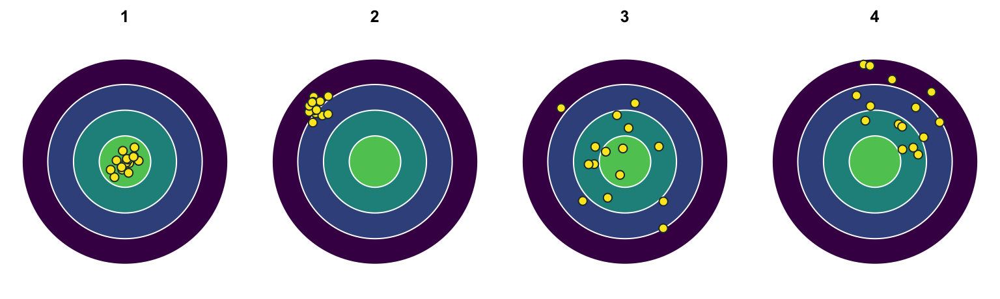

3 Gütekriterien I
In diesem Kapitel ordnen Sie Definitionen und Aussagen den Gütekriterien zu, grenzen Reliabilität und Validität voneinander ab, lernen das Testbeurteilungssystem TBS-DTK kennen und beurteilen anhand einer Testrezension, ob sich ein Test für einen Einzelfall eignet.
Aufgabe 1 (Definitionen der Gütekriterien) Die Definitionen folgen Moosbrugger & Kelava (2020, Kapitel 2). Welches Gütekriterium erfüllt ein Testverfahren …
- … wenn es das Merkmal, das es misst, exakt, d. h. ohne Messfehler, misst?
TippLösung
Reliabilität
- … wenn die laut Verrechnungsregel resultierenden Testwerte die empirischen Merkmalsrelationen adäquat abbilden?
TippLösung
Skalierung
- … wenn die resultierenden Testwerte zu keiner systematischen Benachteiligung bestimmter Personen aufgrund ihrer Zugehörigkeit zu ethnischen, soziokulturellen oder geschlechtsspezifischen Gruppen führen?
TippLösung
Fairness
- … wenn es das Merkmal, das es messen soll, auch wirklich misst und nicht irgendein anderes?
TippLösung
Validität
- … wenn es absolut und relativ zu dem aus seiner Anwendung resultierenden Nutzen die zu testende Person in zeitlicher, psychischer sowie körperlicher Hinsicht nicht über Gebühr belastet?
TippLösung
Zumutbarkeit
- … wenn es derart konstruiert ist, dass die zu testende Person durch gezieltes Testverhalten die konkreten Ausprägungen ihrer Testwerte nicht steuern bzw. verzerren kann?
TippLösung
Unverfälschbarkeit
- … wenn es dasjenige Merkmal, das es misst, unabhängig von Testleiter:innen und Testauswerter:innen misst?
TippLösung
Objektivität
- … wenn es für die Testwerte ein Bezugssystem gibt, mit dessen Hilfe die Ergebnisse einer Testperson im Vergleich zu den Merkmalsausprägungen anderer Personen eindeutig eingeordnet und interpretiert werden können?
TippLösung
Normierung
- … wenn es, gemessen am diagnostischen Erkenntnisgewinn, relativ wenig finanzielle und zeitliche Ressourcen beansprucht?
TippLösung
Ökonomie
- … wenn für das von ihm gemessene Merkmal praktische Relevanz besteht und die auf seiner Grundlage getroffenen Entscheidungen (Maßnahmen) mehr Nutzen als Schaden erwarten lassen?
TippLösung
Nützlichkeit
Aufgabe 2 (Gütekriterien in Rezensionen) Die folgenden Aussagen könnten in Rezensionen psychologischer Tests stehen. Geben Sie jeweils an, welches Gütekriterium beschrieben wird.
- „Die Rohwerte werden getrennt für die beiden Geschlechter und sieben Altersgruppen in z-Werte transformiert.“
TippLösung
Normierung
- „Die Domänen zeigen sehr gute interne Konsistenzen (Cronbachs Alpha) um 0.90, wobei Skala A mit 0.85 leicht abfällt.“
TippLösung
Reliabilität
- „Die … wird durch präzise Anweisungen und standardisiertes Testmaterial bzw. Auswertungsmaterialien (Schablonen) gewährleistet.“
TippLösung
Objektivität, genauer Durchführungs- und Auswertungsobjektivität
- „Die … ist durch eine gute Darstellung von Anleitungen und Interpretationshilfen gesichert.“
TippLösung
Objektivität, genauer Durchführungs- und Interpretationsobjektivität
- „Als guter Beleg für die … kann die Übereinstimmung um 0.45 zwischen Selbst- und Fremdeinstufungen gelten.“
TippLösung
Validität, genauer konvergente Validität als Teil der Konstruktvalidität
Aufgabe 3 (Arten der Objektivität) Nennen Sie die drei Arten der Objektivität in der Reihenfolge, in der sie bei der Anwendung eines Tests zum Tragen kommen.
TippLösung
- Durchführungsobjektivität
- Auswertungsobjektivität
- Interpretationsobjektivität
Aufgabe 4 (Reliabilität und Validität) Die Abbildung zeigt vier Zielscheiben. Jeder Punkt steht für eine Messung; die Mitte steht für das Merkmal, das gemessen werden soll.
- Welche Zielscheibe zeigt eine reliable und valide Messung, welche eine reliable, aber nicht valide, und welche eine Messung, die weder reliabel noch valide ist?
TippLösung
- 1: reliabel und valide.
- 2: reliabel, aber nicht valide: Die Messungen liegen eng beieinander, verfehlen aber das Merkmal systematisch.
- 3: nicht reliabel: Die Messungen streuen stark, liegen aber im Mittel auf dem Ziel.
- 4: weder reliabel noch valide.
- Kann eine Messung wie in Zielscheibe 3 valide sein?
TippLösung
Nur eingeschränkt: Die Reliabilität begrenzt die Validität. Zielscheibe 3 trifft nur im Mittel; einzelne Messungen liegen oft weit vom Ziel entfernt.
Aufgabe 5 (Trifft die Aussage zu?) Geben Sie bei jeder Aussage an, ob sie zutrifft oder nicht. Begründen Sie bei einer Aussage, die nicht zutrifft, in einem Satz, warum.
- Bei der Korrelation zweier Testergebnisse eines Tests, der zur Messung der Intelligenz zu zwei Messzeitpunkten verwendet wurde, wird die Paralleltest-Reliabilität bestimmt.
TippLösung
Trifft nicht zu: Korreliert man die Ergebnisse desselben Tests zu zwei Zeitpunkten, bestimmt man die Retest-Reliabilität.
- Eine Schwierigkeit der Retest-Reliabilität können beispielsweise Erinnerungseffekte sein.
TippLösung
Trifft zu.
- Wenn Schlussfolgerungen über ein Konstrukt aufgrund eines Testwertes wissenschaftlich fundiert sind, dann können wir von Konstruktreliabilität sprechen.
TippLösung
Trifft nicht zu: In diesem Fall spricht man von Konstruktvalidität.
- Zwei Arten der Kriteriumsvalidität sind die Vorhersagevalidität und die Übereinstimmungsvalidität.
TippLösung
Trifft zu.
- Die Inhaltsvalidität ist mit der Augenscheinvalidität verwandt.
TippLösung
Trifft zu.
- Ein Test ohne praktische Relevanz kann immer noch das Gütekriterium der Nützlichkeit erfüllen.
TippLösung
Trifft nicht zu: Nützlich ist ein Test nur, wenn das Merkmal, das er erfasst, praktisch relevant ist.
- Das Gütekriterium Fairness ist bei einer Testung von Kindern mit Sprachschwierigkeiten mit einem sprachbasierten Test zur Erfassung der allgemeinen Intelligenz erfüllt.
TippLösung
Trifft nicht zu: Der sprachbasierte Test benachteiligt Kinder mit Sprachschwierigkeiten systematisch.
- Gütekriterien sind als Eigenschaften von Tests zu verstehen.
TippLösung
Trifft nicht zu: Gütekriterien gelten genau genommen für Testwerte in bestimmten Stichproben und für die Schlussfolgerungen daraus, nicht für den Test an sich.
Aufgabe 6 (Das Testbeurteilungssystem TBS-DTK) Wer in einem Gutachten die Auswahl eines Tests begründet, fasst für Reliabilität und Validität konkrete Befunde zusammen; die bloße Feststellung, ein Gütekriterium sei gegeben, genügt dafür nicht. Wie solche Begründungen aussehen, zeigen Testrezensionen. Im deutschen Sprachraum entstehen sie nach dem Testbeurteilungssystem des Diagnostik- und Testkuratoriums (TBS-DTK).
Lesen Sie die Abschnitte 1 bis 3 und die Tabellen 1 und 2 des TBS-DTK (Diagnostik- und Testkuratorium, 2023).
- Was ist das TBS-DTK?
TippLösung
Das Testbeurteilungssystem des Diagnostik- und Testkuratoriums der Föderation Deutscher Psychologenvereinigungen (Deutsche Gesellschaft für Psychologie und Berufsverband Deutscher Psychologinnen und Psychologen). Es legt fest, nach welchen Richtlinien und in welchem Ablauf publizierte Tests im deutschen Sprachraum rezensiert werden.
- Was bewertet eine TBS-DTK-Rezension?
TippLösung
Die Qualität eines Tests anhand seiner Verfahrenshinweise, vor allem seine Gütekriterien. Objektivität, Zuverlässigkeit und Gültigkeit (einschließlich Fairness) sowie der Informationsgehalt der Verfahrenshinweise werden auf einer vierstufigen Skala bewertet: Die Anforderungen sind voll, weitgehend, teilweise oder nicht erfüllt. Normierung, Störanfälligkeit, Unverfälschbarkeit und Skalierung werden frei beurteilt.
Aufgabe 7 (Die Symptom-Checkliste SCL-90-R) Sie arbeiten als Psycholog:in in einer gerontopsychiatrischen Ambulanz.
- Zur Person: Lydia ist 82 Jahre alt und verwitwet. Seit dem Tod ihres Mannes vor drei Jahren lebt sie allein in ihrer Wohnung. Ihre Tochter wohnt in der Nähe, ist beruflich aber stark eingebunden.
- Aktuelle Symptomatik: Auf Drängen ihrer Tochter stellt sich Lydia in Ihrer Ambulanz vor. Sie wirkt körperlich agitiert (unruhig) und niedergeschlagen. Sie berichtet, dass sie sich seit einigen Monaten „kaum noch konzentrieren“ könne; selbst das Lesen der Tageszeitung gelinge ihr nicht mehr.
- Körperliche und psychische Beschwerden: Sie klagt über anhaltendes, quälendes Herzrasen und ein Druckgefühl in der Brust, für die der Hausarzt keine organische Ursache finden konnte. Zudem leidet sie unter zermürbenden Sorgen: Sie hat Angst, zu stürzen, in der Öffentlichkeit die Kontrolle über ihre Blase zu verlieren, zu verarmen, schwer zu erkranken oder dement zu werden. Frühere Hobbys wie die Gartenarbeit, das Singen im Chor oder Treffen mit Nachbarinnen hat sie komplett eingestellt. Sie fühle sich oft wie „unter einer Glocke“.
Aufgrund dieses komplexen klinischen Bildes erwägen Sie, als Nächstes die Symptom-Checkliste SCL-90-R (Franke, 2002) einzusetzen, um Lydias psychisches Symptomspektrum und ihren subjektiven Leidensdruck differenziert zu erfassen.
HinweisInformationen zur SCL-90-R
Die SCL-90-R ist ein Selbstbeurteilungsfragebogen. Mit 90 Items erfasst sie, wie stark körperliche und psychische Symptome eine Person in den letzten sieben Tagen belastet haben. Die neun Skalen in Tabelle 1 umfassen 83 der Items; alle 90 Items gehen in drei globale Kennwerte ein. Der wichtigste ist der Global Severity Index (GSI), der Mittelwert über alle Items: Er misst die allgemeine psychische Belastung. Die SCL-90-R ersetzt keine klinische Diagnose, dient aber in Therapie und Forschung als Screening-Instrument, um das Ausmaß psychischer Belastung zu erfassen und Behandlungsverläufe abzubilden.
| Skala | Was wird erfasst? |
|---|---|
| Somatisierung | Körperliche Beschwerden (autonom-nervös, gastrointestinal, Missempfindungen) |
| Zwanghaftigkeit | Aufdrängende Gedanken, Kontrollzwänge sowie kognitive Leistungsstörungen |
| Unsicherheit im Sozialkontakt | Minderwertigkeitsgefühle, Unbehagen und Hemmungen im Umgang mit anderen Menschen |
| Depressivität | Gedrückte Stimmung, Antriebslosigkeit, Hoffnungslosigkeit und Suizidgedanken |
| Ängstlichkeit | Innere Anspannung, Nervosität sowie körperliche Paniksymptome |
| Aggressivität/Feindseligkeit | Reizbarkeit, Aggressionen, Zornausbrüche und feindseliges Verhalten |
| Phobische Angst | Situations- und ortsgebundene Ängste (z. B. Agoraphobie, Angst vor Menschenmengen) |
| Paranoides Denken | Misstrauen, Projektion, Feindseligkeit und das Gefühl von Kontrollverlust |
| Psychotizismus | Gefühle von Isolation und Entfremdung bis hin zu Symptomen des schizophrenen Formenkreises |
- Welche Skalen der SCL-90-R werden bei Lydia voraussichtlich erhöht sein? Begründen Sie Ihre Annahme mit den Beschwerden aus der Fallbeschreibung.
TippLösung
- Somatisierung: Druckgefühl in der Brust
- Depressivität: Niedergeschlagenheit, aufgegebene Hobbys und Kontakte
- Ängstlichkeit: Unruhe, zermürbende Sorgen, Herzrasen
- Phobische Angst: Angst zu stürzen und vor Kontrollverlust in der Öffentlichkeit
- Möglicherweise auch Zwanghaftigkeit: Konzentrationsprobleme
- Was erwarten Sie für den GSI?
TippLösung
GSI: deutlich erhöht, also eine ausgeprägte allgemeine psychische Belastung.
Aufgabe 8 (Die Rezension der SCL-90-R) Setzen Sie sich mit der TBS-TK-Rezension zur SCL-90-R von Glöckner-Rist & Stieglitz (2012) auseinander. Prüfen Sie die Erfüllung der Hauptgütekriterien (Objektivität, Reliabilität, Validität) sowie relevanter Nebengütekriterien. Begründen Sie Ihr Urteil systematisch mit Belegen aus der Rezension.
HinweisHinweis
Die Rezension folgt dem Testbeurteilungssystem des Testkuratoriums (TBS-TK) von 2009 (Testkuratorium der Föderation Deutscher Psychologenvereinigungen, 2010), einer älteren Fassung des TBS-DTK mit derselben vierstufigen Bewertungsskala, und spricht von Zuverlässigkeit statt Reliabilität und von Gültigkeit statt Validität.
Objektivität: Lesen Sie den Abschnitt „Objektivität“.
Wie beurteilen die Rezensent:innen die Durchführungsobjektivität? Geben Sie ihre Begründung an.
TippLösungPositiv: Angaben zur fachlichen Qualifikation der Anwender:innen und zur Untersuchungssituation sowie eine standardisierte Instruktion gewährleisten sie.
Wie beurteilen die Rezensent:innen die Auswertungsobjektivität? Geben Sie ihre Begründung an.
TippLösungPositiv: Detaillierte Auswertungsanleitungen und Schablonen, mit denen die Items den Skalen zugeordnet und Rohwerte in T-Werte umgerechnet werden, gewährleisten sie.
Wie beurteilen die Rezensent:innen die Interpretationsobjektivität? Geben Sie ihre Begründung an.
TippLösungÜberwiegend positiv: Ein mehrstufiges Vorgehen und kritische Roh- und T-Wert-Grenzen, ab denen eine erhöhte Belastung vorliegt, unterstützen sie, ebenso Interpretationshilfen für Veränderungsmessungen. Die T-Wert-Bereiche für die Abstufungen der Belastung gelten aber nur als „Faustregel“.
Reliabilität: Lesen Sie den Abschnitt „Zuverlässigkeit“.
Welche der vier Methoden der Reliabilitätsschätzung (Retest, Paralleltest, Testhalbierung, interne Konsistenz) wurden laut Rezension angewandt?
TippLösungInterne Konsistenz (Cronbachs Alpha) und Retest mit einer Woche Abstand.
Wie beurteilen die Rezensent:innen die interne Konsistenz? Geben Sie ihre Begründung an.
TippLösungKritisch: Cronbachs Alpha ist nur für homogene Items sinnvoll. Das trifft hier nur teilweise zu, denn etwa 30 % der Items hängen schon im Original nicht eindeutig mit der für sie vorgesehenen Komponente zusammen, und die neun Dimensionen ließen sich für die deutsche Version nicht bestätigen. Eine eindeutige Beurteilung der Reliabilität ist deshalb nicht möglich.
Wie beurteilen die Rezensent:innen die Retest-Reliabilität? Geben Sie ihre Begründung an.
TippLösungEher positiv, mit einer Einschränkung: Die Retestwerte sind relativ hoch und zeigen, dass die SCL-90-R mehr erfasst als ein Merkmal, das innerhalb sehr kurzer Zeit schwankt. Der Abstand betrug aber nur eine Woche.
Warum fehlt die Paralleltest-Reliabilität?
TippLösungWeil es keine Parallelform der SCL-90-R gibt.
Validität: Lesen Sie den Abschnitt „Gültigkeit“ und die Darstellung der Testkonstruktion.
Wie beurteilen die Rezensent:innen die Inhaltsvalidität? Geben Sie ihre Begründung an.
TippLösungTeilweise gegeben: Für die Erfassung einer allgemeinen psychischen Belastung scheint sie gegeben, die Auswahl der Symptome überzeugt aber nicht für alle Skalen, besonders nicht für Psychotizismus und paranoides Denken. Zudem wurden die Symptome ohne Bezug auf diagnostische Systeme wie DSM oder ICD ausgewählt.
Wie beurteilen die Rezensent:innen die konvergente und die diskriminante Validität? Geben Sie ihre Begründung an.
TippLösungAls wenig aussagekräftig: Die meisten Studien belegen zwar die erwarteten Zusammenhänge, sie prüfen aber nur die neun Skalen, deren Struktur sich nicht bestätigen ließ.
Wie beurteilen die Rezensent:innen die faktorielle Validität? Geben Sie ihre Begründung an.
TippLösungKritisch: Dimensionsanalysen in verschiedenen Stichproben bestätigten die neun Dimensionen für die deutsche Version nicht; beibehalten wurden jeweils nur fünf oder sieben Komponenten.
Wie beurteilen die Rezensent:innen die Konstruktvalidität insgesamt? Geben Sie ihre Begründung an.
TippLösungKritisch: Weil sich die neun Dimensionen nicht bestätigen ließen, sagen die Befunde zur konvergenten und diskriminanten Validität wenig über die Konstruktvalidität aus.
Wie beurteilen die Rezensent:innen die Kriteriumsvalidität, also die Eignung als Screening-Instrument? Geben Sie ihre Begründung an.
TippLösungAls nur bedingt beurteilbar: Es fehlen Angaben zur Sensitivität und Spezifität verschiedener Schwellenwerte und Falldefinitionen.
Nebengütekriterien: Zu den Nebengütekriterien zählen Normierung, Ökonomie, Nützlichkeit, Zumutbarkeit, Unverfälschbarkeit und Fairness. Lesen Sie die Abschnitte „Normierung (Eichung)“ und „Weitere Gütekriterien“.
Was spricht nach der Rezension für die Normierung?
TippLösungEine bundesweite, demografisch repräsentative Eichstichprobe (N = 2141), altersspezifische T-Normen für Männer und Frauen zwischen 12 und 70 Jahren, eigene Normstichproben für Jugendliche (N = 857) und Studierende (N = 800) sowie Kennwerte aus sieben weiteren klinischen und nichtklinischen Stichproben.
Was spricht nach der Rezension gegen die Normierung?
TippLösungDie Normen waren schon bei Erscheinen der Rezension über 15 Jahre alt; die Rezensent:innen empfehlen, sie zu überprüfen und eventuell zu überarbeiten.
Die DIN 33430 legt Qualitätsstandards für die berufsbezogene Eignungsdiagnostik fest (DIN Deutsches Institut für Normung, 2016). Zur Normierung verlangt sie unter anderem, die Normen spätestens alle acht Jahre zu überprüfen und gegebenenfalls zu erneuern. Wie beurteilen Sie die Normierung der SCL-90-R, wenn Sie diesen Maßstab anlegen?
TippLösungDie Anforderung ist nicht erfüllt: Die Normen waren schon bei Erscheinen der Rezension fast doppelt so alt wie erlaubt; sie müssten überprüft und erneuert werden.
Was sagt die Rezension zur Unverfälschbarkeit?
TippLösungDas Manual nennt als Ausschlusskriterium, dass bei körperlich oder psychisch erkrankten Patient:innen Simulations- oder Dissimulationstendenzen zu erwarten sind.
Was sagt die Rezension zur Ökonomie?
TippLösungDie Bearbeitung dauert etwa 10 bis 15 Minuten, und eine computerunterstützte Version wurde auf einen effizienten Einsatz geprüft.
Gesamturteil: Die Rezensent:innen kennen das Manual mit allen Kennwerten; Ihnen liegt nur die Rezension vor. Kreuzen Sie an, inwieweit die TBS-DTK-Anforderungen nach Ihrem eigenen Urteil erfüllt sind.
Symptom-Checkliste SCL-90-R voll weitgehend teilweise nicht Objektivität Zuverlässigkeit Validität TippLösungZum Beispiel, wie in der Rezension:
Symptom-Checkliste SCL-90-R voll weitgehend teilweise nicht Objektivität x Zuverlässigkeit x Validität x Begründen Sie Ihr Urteil für jedes Kriterium mit Belegen aus der Rezension.
TippLösungZum Beispiel:
- Objektivität weitgehend: Durchführung und Auswertung sind standardisiert, und kritische Werte stützen die Interpretation; die T-Wert-Bereiche für die Abstufungen der Belastung gelten aber nur als „Faustregel“, und Beispiele zur Interpretation fehlen.
- Zuverlässigkeit teilweise: Cronbachs Alpha lässt sich wegen heterogener Items und der nicht bestätigten Struktur kaum deuten, und der Retest umfasste nur eine Woche.
- Validität teilweise: Für die allgemeine psychische Belastung (GSI) scheint sie gegeben; die neun Dimensionen ließen sich aber nicht bestätigen, die Befunde zu den Skalen sagen deshalb wenig aus, und Angaben zu Sensitivität und Spezifität fehlen.
Aufgabe 9 (Angemessenheit der SCL-90-R für Lydia) Evaluieren Sie mit der Rezension aus Aufgabe 8 die testdiagnostische Angemessenheit und Validität der SCL-90-R für den Einsatz bei Lydia. Reflektieren Sie dabei kritisch die methodischen Limitationen des Verfahrens im Kontext der Gerontopsychologie (Schwerpunkte: Altersnormierung, altersassoziierte Funktionsveränderungen und körperliche Abbauprozesse).
- Lassen sich Lydias Testwerte mit den Normen der SCL-90-R einordnen?
TippLösung
- Das Problem: Die SCL-90-R ist primär an jüngeren bis mittelalten Erwachsenen normiert (Normstichprobe: 12 bis 70 Jahre). Es fehlen repräsentative, differenzierte Normen für Hochaltrige (80+); zudem sind die Normen veraltet.
- Konsequenz: Lydias Testergebnisse werden mit einer jüngeren Population verglichen. Das kann zu Fehlinterpretationen führen, da sich das Ausdrucksverhalten von psychischem Leid im Alter unterscheidet.
- Ist die Bearbeitung der SCL-90-R für Lydia zumutbar?
TippLösung
- Das Problem: Die 90 Items sind für eine Patientin, die seit Monaten unter Konzentrationsproblemen leidet, sehr lang und anstrengend.
- Konsequenz: Es drohen Ermüdungseffekte, vorschnelles Ankreuzen, das Überspringen von Fragen oder ein vorzeitiger Abbruch des Tests. Laut Rezension nennt das Manual Befragte, die den Fragebogen eventuell nicht adäquat beantworten können, als Ausschlusskriterium; Kurzversionen wären besser geeignet.
- Warum kann Lydias Wert auf der Skala Somatisierung höher ausfallen, als es ihrer psychischen Belastung entspricht?
TippLösung
- Das Problem: Die Skala erfasst körperliche Beschwerden unabhängig von ihrer Ursache. Viele Items der Skala Somatisierung (z. B. Schwindel, Schwächegefühl) treffen auf 82-Jährige aufgrund normaler, altersbedingter körperlicher Abbauprozesse oder komorbider Erkrankungen (z. B. einer leichten Herzinsuffizienz) ohnehin zu.
- Konsequenz: Die SCL-90-R zeigt hier fälschlicherweise eine psychische Belastung an (Scheinerhöhung der Skala Somatisierung), obwohl es sich um körperliche Alterserscheinungen handelt.
- Kann die SCL-90-R klären, ob Lydias Konzentrationsprobleme auf eine Depression oder eine beginnende Demenz zurückgehen?
TippLösung
- Das Problem: Konzentrationsprobleme im Alter können Teil einer Depression sein („Pseudodemenz“), aber auch Vorboten einer neurodegenerativen Erkrankung (z. B. einer Alzheimer-Demenz).
- Konsequenz: Ein Selbstbeurteilungsfragebogen wie die SCL-90-R erfasst nur die erlebte Belastung und kann diese differenzialdiagnostische Unterscheidung nicht leisten; laut Rezension ist die SCL-90-R kein Verfahren zur Diagnosestellung. Dafür ist weitere Diagnostik nötig.
Zusatzaufgaben
Die folgende Aufgabe ist nicht Teil der Vorlesung, kann Ihnen im Studium aber dennoch nützlich sein: Sie zeigt, wie eine Rezension nach dem aktuellen TBS-DTK abläuft. Die Rezension der SCL-90-R in Aufgabe 8 folgt dagegen noch dem älteren TBS-TK.
Aufgabe 10 (Der Ablauf einer TBS-DTK-Rezension) Die Abbildung zeigt den Ablauf einer Rezension nach dem TBS-DTK aus Aufgabe 6; drei Schritte fehlen.
%%{init: {"htmlLabels": false, "flowchart": {"htmlLabels": false}, "themeVariables": {"fontFamily": "Fira Sans"}, "themeCSS": "background-color: #fafafa;"}}%%
flowchart TB
classDef step fill:#3B528B,stroke:#3B528B,color:#fff
classDef gap fill:#fafafa,stroke:#3B528B,stroke-dasharray: 4 4,color:#23373b
classDef done fill:#5DC863,stroke:#5DC863,color:#23373b
select["Auswahl des Tests durch das DTK"]:::step
commission["?"]:::gap
party1["Partei 1: Prüfung und Bewertung"]:::step
party2["Partei 2: Prüfung und Bewertung"]:::step
joint["?"]:::gap
check["Prüfung durch das DTK"]:::step
comment["?"]:::gap
publish["Publikation"]:::done
select --> commission
commission --> party1
commission --> party2
party1 --> joint
party2 --> joint
joint --> check
check --> comment
comment --> publish
- Ergänzen Sie die drei fehlenden Schritte.
TippLösung
Von oben nach unten:
- Beauftragung von zwei Rezensions-Parteien
- Gemeinsame Rezension
- Stellungnahme der Testautor:innen
- Wie arbeiten die beiden Rezensions-Parteien, bevor sie die gemeinsame Rezension verfassen?
TippLösung
Zwei Rezensions-Parteien beurteilen den Test zunächst unabhängig voneinander und anonym; erst danach verfassen sie eine gemeinsame Rezension, bei Uneinigkeit mit beiden Positionen. Die Testautor:innen dürfen nur auf sachliche Fehler hinweisen, nicht die Bewertungen ändern lassen. Bewertet wird kriterienorientiert, ohne Vergleich mit anderen Tests.
- Was geschieht, wenn sich die beiden Parteien nicht auf eine gemeinsame Fassung einigen können?
TippLösung
Die Rezension stellt die unterschiedlichen Positionen dar; über die formalisierten Bewertungen entscheidet dann das DTK.
- Wozu dürfen die Testautor:innen Stellung nehmen?
TippLösung
Nur zu sachlichen Fehlern im Entwurf der Rezension, nicht dazu, ob sie mit den Bewertungen einverstanden sind.
- Fassen Sie aus Ihren Antworten zu den Teilen a bis d zusammen, was das Besondere an diesem Ablauf ist.
TippLösung
Zum Beispiel: Zwei unabhängige, anonyme Urteile werden erst danach zu einer gemeinsamen Rezension zusammengeführt, Uneinigkeit wird offen dargestellt, und die Testautor:innen können die Bewertungen nicht beeinflussen. So sollen die Rezensionen möglichst unabhängig und unvoreingenommen sein.
Literatur
Diagnostik- und Testkuratorium. (2023). TBS-DTK: Testbeurteilungssystem des Diagnostik- und Testkuratoriums der Föderation Deutscher Psychologenvereinigungen. Vierte, revidierte Fassung vom 31. Juli 2023. Report Psychologie, 48(11+12), 18–27. https://www.bdp-verband.de/fileadmin/user_upload/BDP/website/dokumente/PDF/Profession/Testrezensionen/reportpsychologie_11_12-2023_TBS-DTK.pdf
DIN Deutsches Institut für Normung. (2016). Anforderungen an berufsbezogene Eignungsdiagnostik (Norm DIN 33430:2016-07). Beuth.
Franke, G. H. (2002). SCL-90-R – Die Symptom-Checkliste von L. R. Derogatis (2. Aufl.). Beltz Test.
Glöckner-Rist, A., & Stieglitz, R.-D. (2012). TBS-TK Rezension: SCL-90-R – Die Symptom-Checkliste von L. R. Derogatis (Deutsche Version). Psychologische Rundschau, 63(1), 73–75. https://doi.org/10.1026/0033-3042/a000103
Moosbrugger, H., & Kelava, A. (Hrsg.). (2020). Testtheorie und Fragebogenkonstruktion (3. Aufl.). Springer Berlin Heidelberg. https://doi.org/10.1007/978-3-662-61532-4
Testkuratorium der Föderation Deutscher Psychologenvereinigungen. (2010). TBS-TK: Testbeurteilungssystem des Testkuratoriums der Föderation Deutscher Psychologenvereinigungen. Revidierte Fassung vom 09. September 2009. Psychologische Rundschau, 61(1), 52–54. https://doi.org/10.1026/0033-3042/a000013